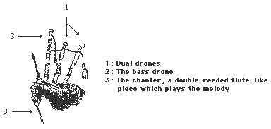

Music played a very important role in ancient Celtic society. Every high-born man or woman was expected to be able to play the harp, and to take turns playing tunes at celebrations.
Bards were people of great power and high esteem on a par with the druids. They often sang songs accompanied by a harp: songs of praise to their patrons, remembrances of family lineages and sophisticated poetic lays.
It is believed that one of the primary functions of the bard in early Britain was to remember and glorify family genealogies, a particularly important function in an oral culture in which property and power were inherited.
The harp was the instrument of choice in ancient Celtica, although in later times other instruments such as bagpipes or violins were also incorporated into the Celtic music tradition.
A harpist began training at age ten, and wasn't considered a professional until the age of eighteen. All that we know about the ancient harp-playing technique was that it was played with sharpened fingernails. The music was rich, light and rapid, with occasional arpeggios* superimposed with fourth and fifth chords.
The harpist was expected to have mastered three musical styles, the "Three Noble Strains": the "Suantraidhe [I]," which would cause all hearers to fall into a sweet slumber; the "Goltriadhe [I]," which none could hear without weeping; the "Genintraidhe [I]," which would cause all to burst out in laughter. [30]
There is evidence that the ancient Celts also may have had musical modes assigned to the seasons of the year, as well as to the times of the day. [43]
Music was often associated in Celtic myths with the Otherworld, the land of the gods. Delicious music was said to lure men to fairy mounds, and the Birds of Rhiannon were supposed to hold the listener in a timeless state with their magical songs.
Music plays an important role in the myths of the gods and goddesses as well. Irish bardism claims to have a divine founder, and British bardism is also steeped in divine and magical origins.
The Dagda [I], father of many of the Irish deities, had a magical harp that sprung into his hands whenever he beckoned it with a magical invocation.
The myth "Tain Bo Froech [I]" says that the melodies of the court's horn players caused thirty guests to "die of yearning."
Bards were said to be able to go into awen [W], a trance of divine inspiration and prophecy of the future. The bard was also feared for his use of the glam dicin [I], a poetic satire of such supernatural potency that it could bring shame and ruin to a king. [26,43]
In later Celtic society, the roles and specialisations of bards and druids became blurred, suggesting that they originally had similar levels of power and magical abilities.
The harp is one of the oldest and most widespread instruments in the world. Harps dating from 2,800 BCE have been found in Ur, near Mesopotamia.
Although some scholars contend that Phoenician sailors carried the harp to the Celts via the Mediterranean, others argue for a native Celtic origin. This latter claim is substantiated by the fact that the Celtic languages possess original words (rather than loan words) for the harp: clarsaich [I, S], telyn [W] and telenn [B].
The first definite representation of the Celtic harp appears rather late, on a cross of the Ullard Church (near Kilkenny) constructed in 830 CE. This picture is of a rather refined harp, an indication that the harp probably existed long before hand.
The oldest known harp in existence is the "Brian Boru" harp, a bardic harp from the 13th century CE. It has thirty brass strings and stands 75 cm tall. [30]
There is no doubt that it was the Irish who first elevated the harp into an instrument of unsurpassable quality and beauty, an instrument that the authors of the Middle Ages praised for its strength and melodious tone. The Irish added a column of wood on the front of the harp that allowed the frame to withstand the tension of more strings. The strings then could also be strung tauter, thereby increasing the range of notes.
The Irish harp hovered on the edge of extinction many times, mostly due to the efforts of the English who considered harps subversive instruments exalting national Irish pride. Gradually only the blind and begging played it in public.
A sudden resurgence of interest in the harp in the early 19th century brought about the birth of the Egan harp, the gut-string ancestor of the modern Irish harp. Revivals during the founding of the Irish Republic and during the last few decades have made the harp a tenaciously popular instrument. [30]
Celtic courts rivalled those of the Irish for superior musicianship, and Gerald of Wales wrote in 1187 that:
"…in the opinion of many, however, Scotland has not only attained the excellence of Ireland, but has in musical scienceand ability surpassed it…"
The Scottish musicians used the same harp as the Irish, although the gut-string "harp" came intopopularity alongside the traditional wire-string "clarsaich [S]." The clarsaich was traditionally playedon the left shoulder with the fingernails while the gut-string harp was played on the right shoulder withthe fingerpads.
Clan chiefs in the Highlands gave harpists rich employment, and harps were often brought to battleuntil the bagpipes took over that function in the 16th century. But the clarsaich lapsed with the clansystem. Finally, the efforts of religious zealots, the increasing influence of the English and thedevelopment of the pedal harp brought the clarsaich to obscurity.
Fortunately two 15th century Scottish harps survived due to the care of the Robertson family of Lude.Reconstructions of the clarsaich were built from these models, and a revival of the tradition was begunin 1892 by a patron of the arts, Lord Archibald Campbell. [12]
The demand to play Baroque music caused the Welsh to develop a complicated harp with three sets of strings. This arrangement eventually proved too difficult to use, and the Irish harp was readapted. The Welsh harp did, however, contribute much to the later development of the orchestra pedal harp. Immigrants from Britain to Brittany in the 5th century brought the harp with them, where it was to enjoy a prominent position until Brittany lost its independence to France. [30]
The bagpipe is also an ancient instrument found all over the world, from Pakistan to Spain. The first documented bagpipe is displayed on a Hittite slab at Eyuk, dating to 1,000 BCE. Bagpipes are also mentioned in the Bible, such as in passages in Genesis and Daniel.

However, these early pipes were very different than the bagpipes of today, and started out as a simple reed pipe, which has since evolved into the chanter.
The Romans added the air bag to what they called the tibia utricularis. Historians have noted that Nero plays the bagpipe, not the fiddle, on Roman coins. It was the Romans who brought the bagpipe with them to the Celtic lands. [55]
Evidence seems to suggest that pipes were widespread throughout Britain before they were so fervently embraced in Scotland.
The Northumbrian region in England is known as a primary location in the evolution of the bagpipe. In Northumbria was the place of origin for the indigenous shuttle pipes, the small pipes, the half-long pipes and the great war/gathering pipes.
Ireland has also seen significant bagpipe development, including the creation of the the uillean (chamber/bellows) pipes, the nillean pipes and the war pipe.
Disagreement exists over when and where the bagpipe entered Scotland. The Scottish bagpipes as we know them today are called in Gaelic piob-mhor, or great pipe. The pipes have three drones, and only one possible volume — loud! The origin of the drones is still a matter of dispute. [55]
Historically, the bagpipe was very popular throughout Britain. Carvings of bagpipes exist in pre- Reformation churches of the Middle Ages, and the miller from "The Miller's Tale" in Chaucer's The Canterbury Tales plays the bagpipes.
Payments recorded by the Lord High Treasurer of Scotland in 1489 and 1506 attest to the employment of a bagpiper by the Scottish king.
It is believed that the Irish entertained Edward I at Calais in 1297 with the pipes, as well as played them at the Battle of Falkirk in 1298.
Shakespeare's "Henry IV" makes an allusion to the "drone of a Lincolnshire bagpipe," and both Henry VII and Henry VIII are believed to have employed bagpipers. [55]
Despite this earlier patronage, the English officially banned the wearing of the kilt and the playing of the bagpipe in 1746, in an effort to stamp out Scottish nationalism.